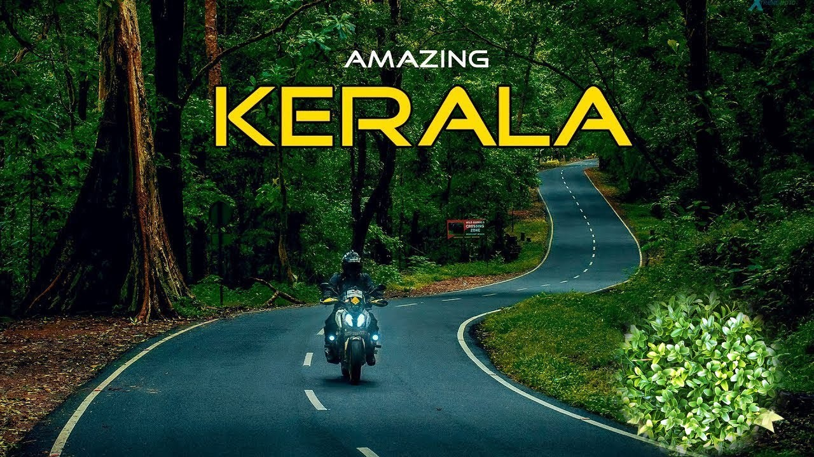
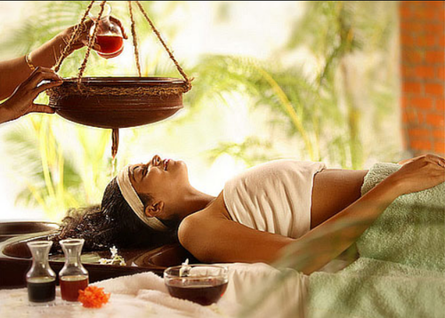

Kerala has an endless list of tourist destinations that will interest any traveller. Renowned for its scenic locations and natural beauty, Kerala is sure to enchant any nature lover with its hills, backwaters, beaches, waterfalls and wildlife. The state also has a rich heritage and thriving culture one can explore by visiting the various forts, palaces, museums, monuments and pilgrim centers. Both natural and manmade brilliance await you at every turn.
Kerala is renowned for some of its unique cultural and geographical characteristics. The practices and traditions handed down from generation to generation, alongside some of the natural wonders that we have been blessed with have attracted people to this land for centuries. From the ancient healthcare system ofAyurveda to our picturesque hill stations and diverse wildlife, we provide you with links to access a wide range of our specialities. We believe it is our duty to share these gifts with the rest of the world.
